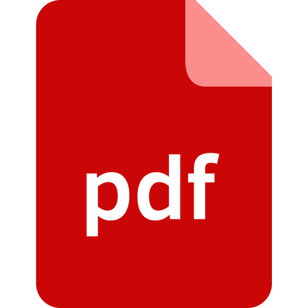

About Me
{{resume.about_me}}
Contact Info
|
|
{{icon_link.text}} |
Resume
I've created my resume using HTML/CSS and Javascript, in a way that I can automatically convert it to a PDF. You can see how I did this on GitHub, or click below to view my resume in your preferred format:
|  | |
 |
HTML |
| JSON |
Personal Projects
{{project.title}} {{project.title}} View Source
{{project.description}}
Work Experience
{{job.company}}
{{`${job.location} (${job.date_start} - ${job.date_end})`}}
{{job.description}}